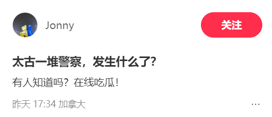
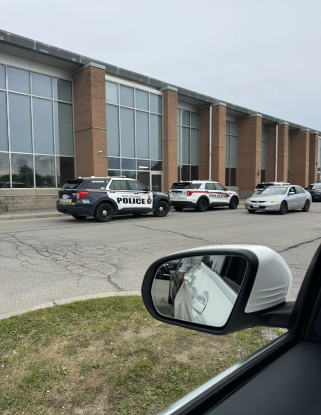
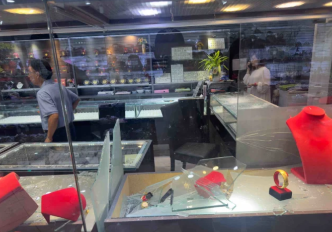
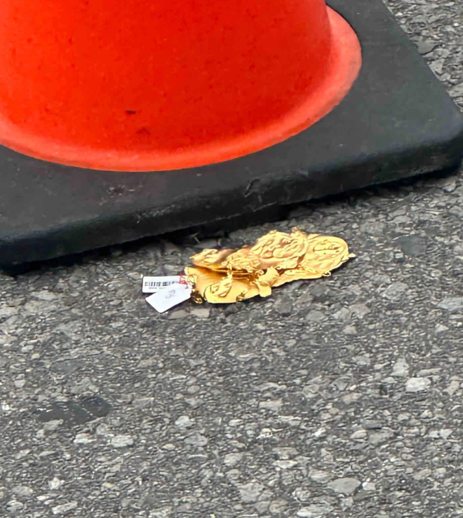
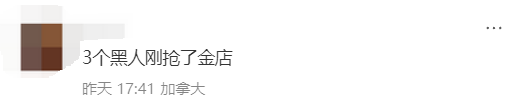
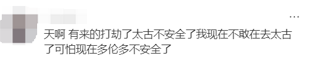

多伦多华人常去的万锦太古广场又出事了！一堆警察包围了商场！


图源：小红书@Jonny
据华人网友爆料，昨天（8月6日）下午，太古广场内的一家珠宝店遭”洗劫“，大约3-4名劫匪砸碎橱窗进店扫荡，抢走了数量不明的珠宝，随后逃离了现场。

网友供图
还有一些金饰掉在了地上。

网友供图
一位华人描述说：”四个黑人抢珠宝店。一个黑人从我身边跑进去的，我马上走到珠宝店门口了，听见一个女人叫，我以为警铃呢，然后嗙的一声，看见好几个黑人，我就跑了。”

据悉，此次被抢的珠宝店已经是第三次被抢了。已联系商家了解更多细节，截止发稿前尚未收到回复。
向约克区警方求证获悉，Kennedy和Steeles地区的一家珠宝店发生一起抢劫案。多名嫌疑人携带数量不明的物品逃跑。没有人员伤亡报告。
网友纷纷表示，这样下去，大家都不敢出门了，商家怎么做生意…
